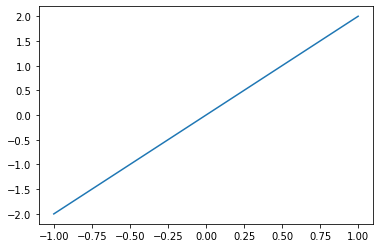

markdown 语法#
Danger
这里只记录一些特殊的语法。
文件头#
这里是文件头的内容，python3 是为了指定用来执行本文档代码块的程序，应该可以替换成 R 获得更有趣的效果
%开头的内容好像不会被显示，是 md 文件的注释下面的文件头中不加 kernelspec: 就是不执行文档中的 code cell ，即普通的 markdown
---
file_format: mystnb
kernelspec:
name: python3
display_name: Python 3
---
常规语法#
– 分割线依然可以用，其他常规语法也可以用
一些小组件#
Note
rst 和 markdown 的小组件一样
下面是一个 note 框的代码，此外还有 Danger，直接替换中括号里的 note 即可
sidebar 是一个有点用特殊的，会在当前段落旁边生成一个小框，用法同样是把 note 替换成 sidebar
只能这样注释一下，实际使用中把注释去掉
```{note}
这个就是开头的那个框框
```
可执行代码块#
核心是可执行代码块，也可以画图，
连报错都可以显示，但最好不要有报错，会影响后面块的显示
{code-cell} 后面的 python 可以去掉，用文件开始声明的 kernal 执行
```{code-cell} python
print("love is true")
a
```
演示：
print("love is true")
love is true
演示下 tag: ，tag 可以隐藏输出，隐藏输入，隐藏报错 ** hide-output：隐藏输出； hide-input ：隐藏输入，hide-cell：隐藏整个单元 ** 把上面的 hide 直接换成 remove 是直接删除，remove-output
```{code-cell}
---
tags: [hide-output]
---
for i in range(20):
print("Millhouse did not test cootie positive")
```
for i in range(3):
print("Millhouse did not test cootie positive")
Show code cell output
Millhouse did not test cootie positive
Millhouse did not test cootie positive
Millhouse did not test cootie positive
plot#
画图有三种画法，第一个是刚才介绍的 code-cell， 还有一种是 eval-rrt，可以执行里面的 rst 块，最后是 jupyter-execute
code-cell
import matplotlib.pyplot as plt
import numpy as np
x = np.linspace(-1,1,50)#从(-1,1)均匀取50个点
y = 2 * x
plt.plot(x,y)
plt.show()

eval-rrt
(Source code, png, hires.png, pdf)
{kind=link}
{kind=link}
import matplotlib.pyplot as plt
import numpy as np
x = np.linspace(-1,1,50)#从(-1,1)均匀取50个点
y = 2 * x
plt.plot(x,y)
plt.show()
测试折叠快#
# 下面两种折叠块代码能生成如下两种折叠块
```{dropdown} With a title
dropdown
```
```{toggle}
toggle
```
With a title
dropdown
toggle
代码块选择 tab#
代码
```{eval-rst}
.. tab-set::
.. tab-item:: python
.. code-block:: python
def main():
return
.. tab-item:: java
.. code-block:: java
class Main {
public static void main(String[] args) {
}
}
```
def main():
return
class Main {
public static void main(String[] args) {
}
}